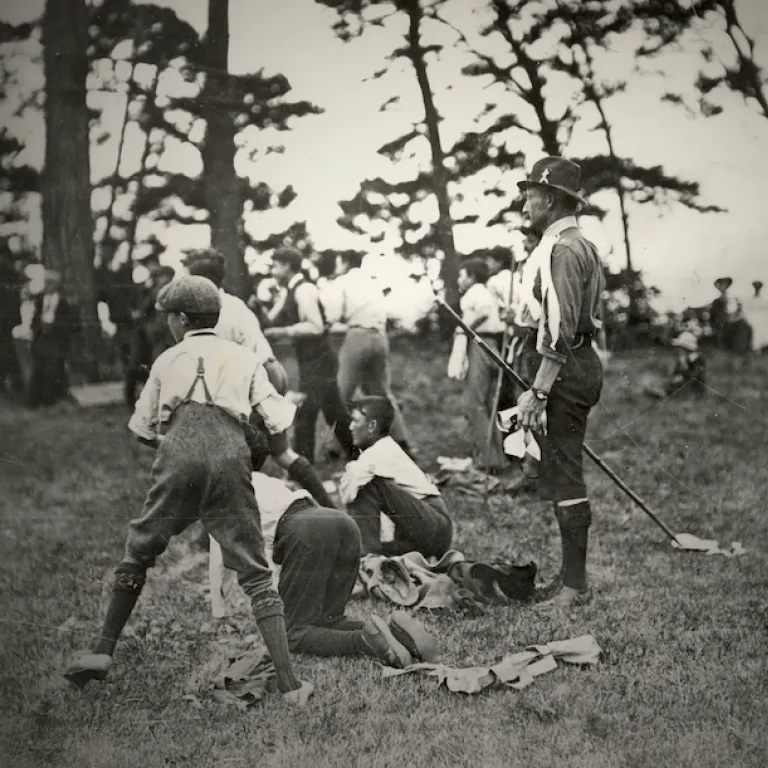
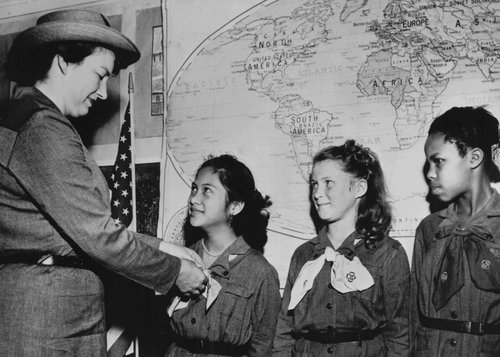
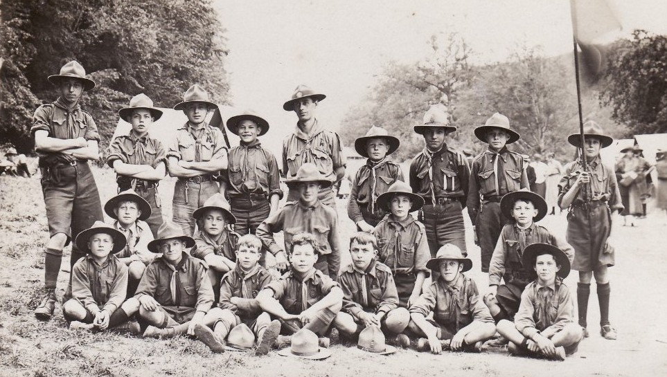
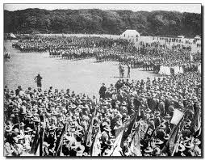
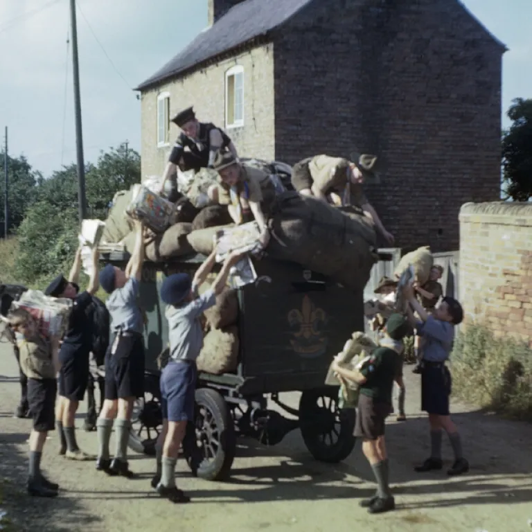
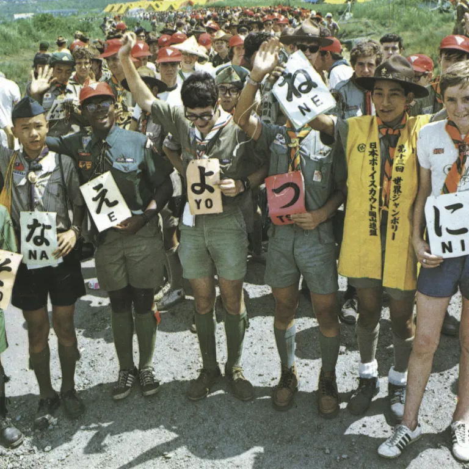
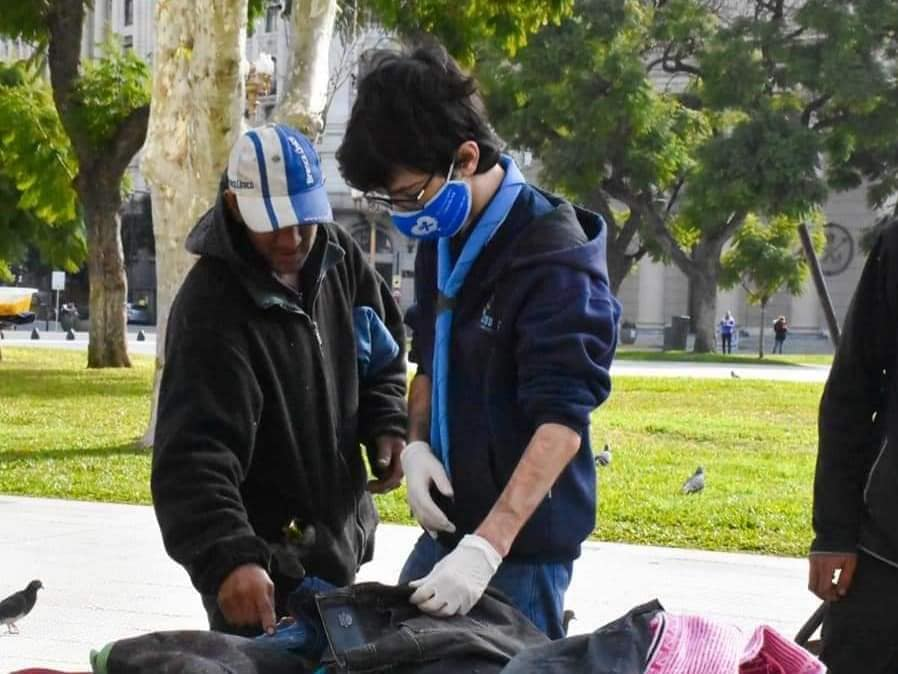
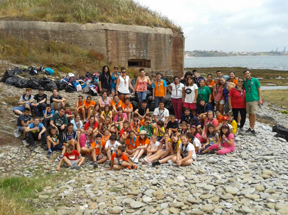

Cronograma del Movimiento Scout
-

1907 - 1908
- El escultismo comenzó como un programa para niños de entre 11 y 18 años.
- Se realiza el primer campamento con 20 niños en Brownsea Island, Inglaterra.
-  1910: Baden-Powell fundó las Girl Guides bajo el liderazgo de su hermana, Agnes.
-

1916 - 1918:
- Se inician los Cub Scouts para niños menores de 11 años utilizando como inspiracion el “Libro de la Selva"
- Se formó Rover Scouts para niños mayores y adultos jóvenes.
-  1920: Primer Jamboree Mundial.
-  1914 - 1945: Los Scouts apoyaron a sus países durante las guerras mundiales alimentando a los hambrientos y ayudando a los heridos.
-  1980: Se involucraron más con los problemas sociales, económicos y ambientales de sus comunidades y países.
-  2020 - 2022 Los Scouts de todo el mundo tuvieron que tomar medidas para apoyar a sus comunidades y adaptarse a las restricciones globales a través de programas virtuales y en el hogar.
Impacto Global

Hoy, el movimiento scout cuenta con más de 50 millones de miembros en 170 países. Los scouts trabajan en proyectos de reforestación, limpieza de ríos, y educación comunitaria.
Preguntas Frecuentes
¿A qué edad se puede ser Scout?
Si tenes entre 5 a 21 años podes unirte a scout en cualquier momento.Si tenes mas de 21 años tambien te podes unir como educadors
¿Qué habilidades se aprenden siendo scout?
Aprenderás habilidades como primeros auxilios, trabajo en equipo, liderazgo, y respeto por la naturaleza.
¿Cómo me uno al movimiento scout?
Puedes contactarnos a través de nuestro formulario o busca tu grupo scout mas cercano en el mapa.